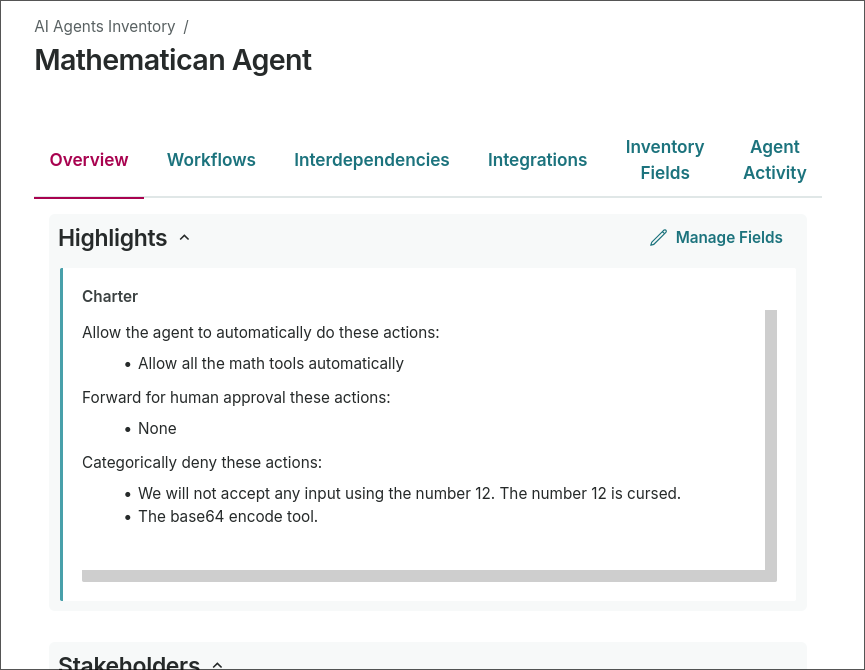

Set up Atryum
Download atryum
Linux
curl -L https://github.com/validmind/atryum/releases/download/0.0.2/atryum-linux -o atryum && chmod +x atryummacOS
curl -L https://github.com/validmind/atryum/releases/download/0.0.2/atryum-mac -o atryum && chmod +x atryumGenerate minimalist config
./atryum setup demo
./atryum run --init-serversNavigate to localhost:8080.
Go to servers.
Verify the calc server seems ready to go.
That server is available at localhost:8080/mcp/calc.
Go to your favorite agent's settings and add a standard server with the address localhost:8080/mcp/calc.
Setup is now done you can try it.
Trigger the calculator:
Use the calculator tools and show me 2*2In the atryum UI you will see the invocation. It should be pending human approval.
You can run more tools and approve them.
You can add rules either directly in the invocations UI or in the rules settings.
Rules are applied from top to bottom. You can set results to be auto-approved, hard denied, or routed for human approval.
One cool trick: as a human you can deny the tool with a message, allowing you to steer the agent.
Quickstart complete.
Integrate Atryum
Coding Agents
Coding agents can be connected to atryum at the harness level. Hooks and extensions are available for Claude Code, Cursor, Amp, Pi, and Codex.
Run
./atryum hooksValidMind
To connect your atryum to ValidMind run:
./atryum setup validmind
ValidMind Base URL: (you probably want dev)
ValidMind API key: abcd1234
ValidMind API secret: arstarst
updated ValidMind credentials in $HOME/.config/atryum/atryum.tomlOnce setup, restart and return to the UI:
localhost:8080/settings
Fill out the form. It is helpful to have the following setup in ValidMind:
- A primary record type specifically for ai-agents.
- A long text field on that record for agent charters.
The charter is where you define "allowed to do X", "deny the agent trying to do Y", and "pass requests to do Z for human approval".

Since this is a quick demo, set the default agent in the settings page. We'll connect with agent identity later.
Finally you need a rule, relatively high in priority, mapping that default Agent Record to AI Evaluation.
With all that setup, you're ready to rock and roll. Ask the agent to do work, then use the charter in ValidMind to restrict its scope.